ネンドロ種の技一覧
ネンドロ種の技一覧
間合い・ランク別の技
技名を押すと詳細がその場で開きます。空欄は未実装の枠です。
| ランク | 遠距離 | 中距離 | 近距離 | 零距離 | ||||||||||||||||||||
|---|---|---|---|---|---|---|---|---|---|---|---|---|---|---|---|---|---|---|---|---|---|---|---|---|
| ランク1 |
|
|||||||||||||||||||||||
| ランク2 |
|
|
||||||||||||||||||||||
|
固有技 パワースタンプ・緑近距離ランク2
技能力回避上昇[小] 回避パラ+20 ライフ上昇[大] ライフパラ+40 |
||||||||||||||||||||||||
十文字斬り零距離ランク2
技能力ちから上昇[小] ちからパラ+20 |
||||||||||||||||||||||||
|
固有技 十文字斬り・黒零距離ランク2
技能力かしこさ上昇[小] かしこさパラ+20 |
||||||||||||||||||||||||
| ランク3 |
|
|||||||||||||||||||||||
ズームパンチ遠距離ランク3
技能力命中上昇[小] 命中パラ+20 |
||||||||||||||||||||||||
ローリング逆水平近距離ランク3
技能力ライフ上昇[超] ライフパラ+50 |
||||||||||||||||||||||||
| ランク4 |
|
|||||||||||||||||||||||
ネンドロラッシュ遠距離ランク4
技能力連撃：ネンドロラッシュ 対象技命中時、ダメージ＜20%＞の追撃を＜1〜3回＞与える ライフ上昇[超大] ライフパラ+100 |
||||||||||||||||||||||||
脳天唐竹割り中距離ランク4
技能力ライフ上昇[超大] ライフパラ+100 脳天唐竹割り 対象技命中時、ライフの20%を攻撃ステータス加算 |
||||||||||||||||||||||||
|
固有技 スイカ割り中距離ランク4
技能力ライフ上昇[超大] ライフパラ+100 スイカ割り 対象技命中時、ライフの20%を攻撃ステータス加算 |
||||||||||||||||||||||||
サムライキック零距離ランク4
技能力サムライキック 対象技発動時、次の効果発動 ライフ上昇[超大] ライフパラ+100 |
||||||||||||||||||||||||
| ランク5 |
|
|||||||||||||||||||||||
|
固有技 神之怒中距離ランク5
技能力神之怒 対象技発動時、次の効果発動 連撃：神之怒（メギド） 対象技命中時、追加でダメージLv1を5回与える |
||||||||||||||||||||||||
延髄斬り零距離ランク5
技能力延髄斬り 対象技発動時、次の効果発動 貫通Lv4 対象技命中時、相手の丈夫さ＜40%＞無視 |
||||||||||||||||||||||||
固有技
ネンドロ種のうち、特定のモンスターだけが使える技です。
ネンドロ種のモンスター（12体）
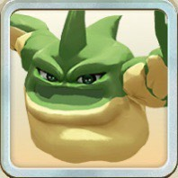
アモン
緑
魔族
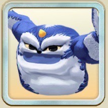
フラッペ
青
魔族
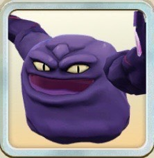
ドクドク
黒
魔族
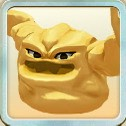
ネンドロ
黄
魔族
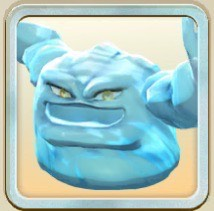
アクアクレイ
青
魔族
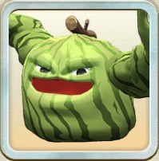
夏限定スイカクレイ
緑
魔族
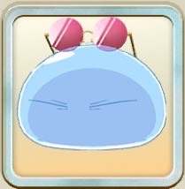
コラボ限定リムル・グラサン
青
魔族
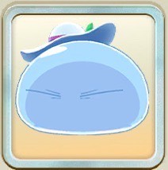
コラボ限定リムル・リゾート
青
魔族
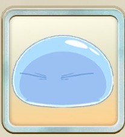
コラボ限定リムル
青
魔族
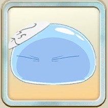
コラボ限定リムル(仮面)
青
魔族
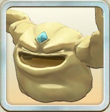
ムネンド
黄
魔族
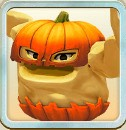
イベント限定ジャック
黄
魔族